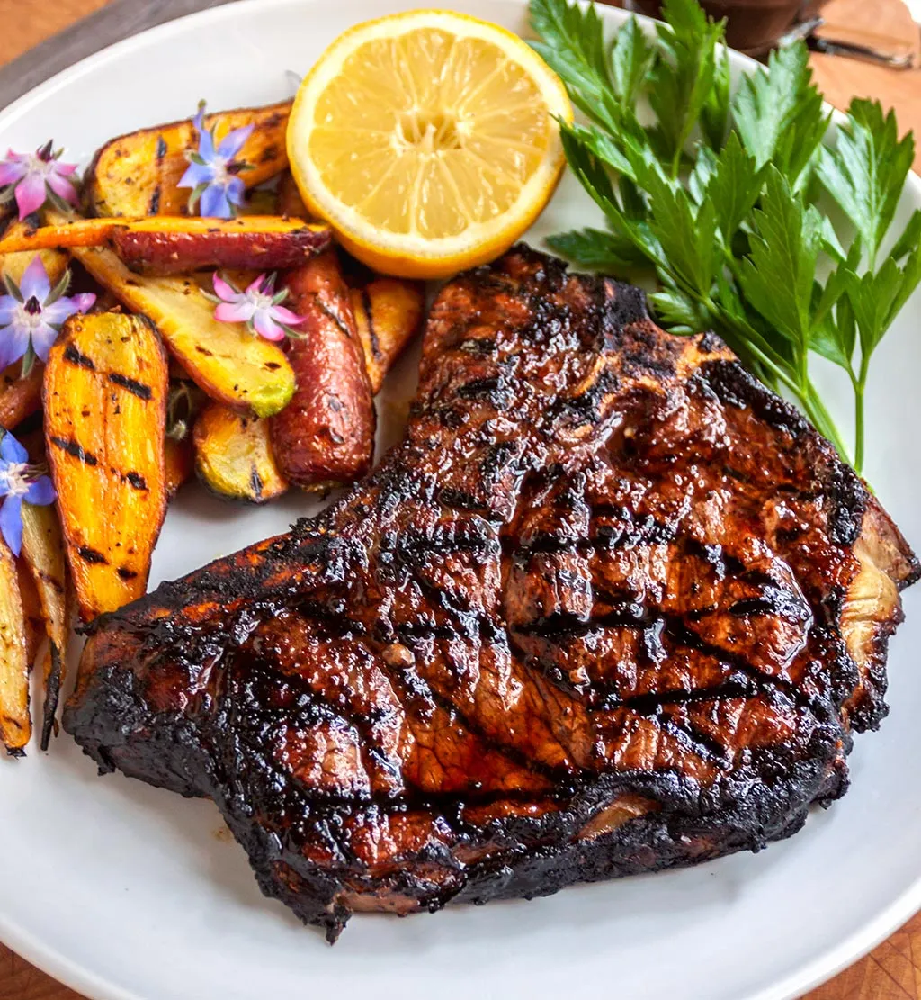

Steak

Description
Sometimes nothing is more appetizing than a juicy steak
Everyone from athletes to grandpa love a nice cut slab of meat
Be prepared to be taken on a journey with this no-frills recipe
Ingredients
- Steak (any cut will do we prefer ribeye and skirt)
- Butter (the fancier the better)
- Salt
- Pepper
- Cooking Oil
Directions
- Set pan to high heat and scatter salt over pan
- Put light drizzle of cooking oil over hot pan
- Wash and pat steak dry (dry steak creates golden brown sear
- Once pan is bubbling and on verge of smoke; add steak
- Flip steak after 4 minutes
- Throw butter in pan after 3 minutes, take of heat
- Bathe steak in butter
- Salt and pepper to taste
- Let steak cool off for 3 minutes so juices transfer and steak is tender
Return Back To Main Page